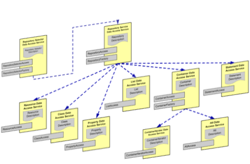
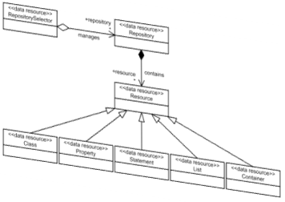
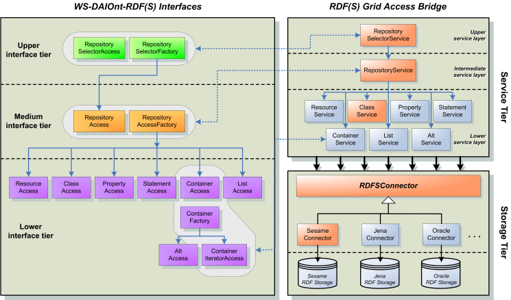
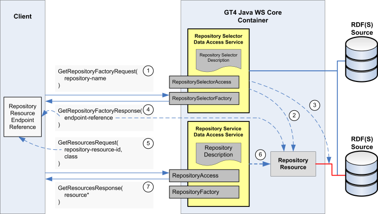

")
")
WS-DAIOnt-RDF(S)
WS-DAIOnt-RDF(S) ya no está siendo utilizado ni mantenido por nuestro grupo.
WS-DAIOnt-RDF(S) es una especificación que define un mecanismo de acceso a ontologías RDF(S) utilizando una aproximación orientada a servicios.
Esta especificación, compatible con la arquitectura OGSA, define el conjunto de recursos de datos, mensajes e interfaces de acceso necesarios para la integración de ontologías en RDF (S) en cualquier aplicación (Grid) orientada a servicios.

RDF(S) Grid Access Bridge (RGAB) es la implementación de referencia de dicha especificación. Esta implementación desacopla el mecanismo de acceso de la ubicación física real de las ontologías RDF(S) así como del sistema de almacenamiento utilizado para su persistencia.
De esta forma, las ontologías RDF (S) pueden ser almacenadas en un conjunto distribuido de sistemas de almacenamiento de RDF (S) y hacerse accesibles mediante los mecanismos de acceso definidos por la especificación WS-DAIOnt-RDF (S).

Cómo usarlo
La especificación WS-DAIOnt-RDF (S) se puede implementar utilizando cualquier infraestructura para el desarrollo de servicio web. No hay ninguna restricción con respecto a la infraestructura elegida, pudiendo ser implementada tanto usando soluciones tradicionales para el desarrollo de servicios web (por ejemplo, Apache Axis o Apache CXF) , como con plataformas Grid basadas en servicios web (por ejemplo, Globus Toolkit 4).

El RDF (S) Grid Access Bridge puede ser utilizado para programáticamente por medio de las interfaces de servicio definidas por WS-DAIOnt-RDF(S). De manera adicional, el sistema incluye un conjunto de clientes ligeros que permiten interactuar con los servicios por línea de comandos.

Historias de éxito
Tanto la especificación WS-DAIOnt-RDF (S) como la implementación RDF(S) Grid Access Bridge han sido creadas en el marco del proyecto OntoGrid.
La especificación de WS-DAIOnt-RDF (S) ha sido utilizada como base para la elaboración de la especificación de WS-DAI-RDF(S), la cual está siendo estandarizada en el Open Grid Forum (http://www.ogf.org).
Para más información sobre la aplicación y obtener el software, visite el siguiente enlace del proyecto Ontogrid .

Created under Creative Commons License - 2015 OEG.